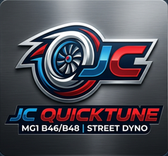

From the same stack we run on a daily 230i
Custom MG1 tune for B46/B48 — Comfort for the week, Sport when you want noise.
A lot of Stage 1 files force one personality all the time. This one is built the other way: quiet and thriftier in Comfort / default, and only mean in Sport / Sport+.
Built on 93 AKI, hot weather, and a lot of real street pulls — not brochure fantasy.
Base flash $149 Build order ↓
Numbers from our car
All-stock hardware · 2017-class 230i · ZF8 · stock turbo / intake / exhaust / cooling · 93 AKI · full dual-mode stack with limits holding.
| Peak power | ~285–295 rwhp |
| Peak torque | ~335–355 lb-ft wheels |

Extensive testing & datalogs · all-stock baseline · list mods when ordering
Mods matter. Downpipe, intake, intercooler, charge pipe, exhaust, ethanol, bigger turbo, upgraded clutch/TCU, etc. change airflow, fueling, and torque limits. List every modification when you order — don’t assume a stock calibration is right for a modified car.
What you’re actually getting
Comfort / daily
Flip the car out of Sport and it settles down into a true daily personality — smoother manners, quieter overrun, and calibration aimed at efficient commuting and highway cruising. You still have the hardware and the headroom underneath; Comfort just stops shouting about it.
When you want the show back, you don’t need a laptop or a second flash. One mode change and the car is a different animal again.
Sport / Sport+
This is where it gets addictive. Tip-in is immediate — you feel the throttle wake up the second you lean on it. Part-throttle response is sharp and connected, and when you dig in, boost and torque come on hard so acceleration hits right now, not after a long wait for the turbo to “think about it.”
Sport and Sport+ also bring the soundtrack: strong burbles and crackle on lift, with a pedal map tuned to feel snappy and alive without being sloppy. It’s the fun version of the same car — ready the moment you switch modes.
One flash. Whole personality — on the fly.
Most tunes lock you into a single attitude. This calibration is built around switching the car’s entire character with the drive mode: Comfort when you’re saving fuel and nerves, Sport when you want instant throttle, fast pulls, and the soundtrack to match. No reflash mid-drive. No juggling files. Just twist the mode and go.
What’s in the base flash
- Dual personality: quiet Comfort, loud Sport paths
- Full BIN delivery for MG1 full-flash tools (DME must already be unlocked — see requirements)
- Raised torque & load ceilings for Stage-class delivery on stock hardware
- Sport burble pack (duration + timing offsets)
- Drive-safety / acceleration limit calibration for high-output street use
- Optional Texas cooling pack, spicier pedal, louder burble, log review
- One free revision within 14 days if you need a small adjustment after driving it
Flash requirements (non-negotiable)
- DME unlock first (hardware/tool path). Use B48 Quickflash (or equivalent). The DME must already be unlocked for full flash — Quickflash should report unlock detected / full-flash capable, not locked stock behavior. This BIN does not unlock a locked DME.
- Read and save stock. Keep the original BIN offline. If something goes sideways, that’s your way home.
- Tell us if the car is stock or not. Base numbers and the default calibration assume all-stock hardware (stock turbo, intake, exhaust, cooling, fuel system). Any bolt-ons or fuel changes must be listed up front so fueling, boost, and limits can be adjusted correctly.
- Full flash this tune BIN. Partial writes / wrong software family / mismatched SWFL are how people brick evenings. We match to your platform notes (e.g. 080.017.x style family on our development car) — tell us your exact SWFL/SWFK from Quickflash before we send a file.
- Stable power. Battery tender recommended. Don’t flash on a dying battery in a parking lot.
- After flash: clear DTCs, clear DME adaptations once, easy drive before you go hunting WOT records.
If the DME is still locked and you don’t have B48 Quickflash (or similar), stop here. This product assumes you (or your shop) already handled DME unlock and can run a full flash. We’re selling the calibration — not a DME unlock service.
Pricing
Base is $149 for an all-stock dual-mode full flash. Add-ons are optional. Modified cars: still order base, but list every mod so the file isn’t built blind.
Base dual-mode full flash
$149
Comfort eco path + Sport smooth/snappy delivery, Sport burble, torque ceilings, accel safety. Full BIN. You provide SWFL/SWFK info and confirm the DME is already unlocked for full flash.
Add-ons
Order
No card form on this page yet. Fill this out and it builds a plain-text order you can email or message. Total updates as you tick add-ons.
FAQ
- Can you unlock my DME in the file?
- No. DME unlock is a separate bootloader / tool process (B48 Quickflash or similar). This product is the calibration image only — for a DME that is already unlocked and can take a full flash.
- Partial flash / map-only write?
- Not supported for this product. Full flash only.
- Will Comfort still burble?
- It shouldn’t be loud or constant. Sport is where the intentional crackle lives. If your DSC mode mapping is weird, say so and we adjust.
- Warranty?
- Flashing is on you. Tuning can hurt engines and gearboxes. No warranty on hardware. I’ll help with the file if something’s clearly wrong in the cal.
- Fuel?
- Built around 93 AKI US premium. Don’t cheap out on 87 and then email about knock.
- Is this for a stock car?
- Yes by default. The published power/torque figures and the base calibration assume all-stock hardware. If you have any mods (downpipe, intake, intercooler, exhaust, charge pipe, ethanol, turbo, clutch, etc.), list them when you order — accurate tuning depends on that. Don’t flash a stock-oriented file on a heavily modified car and expect it to be right.